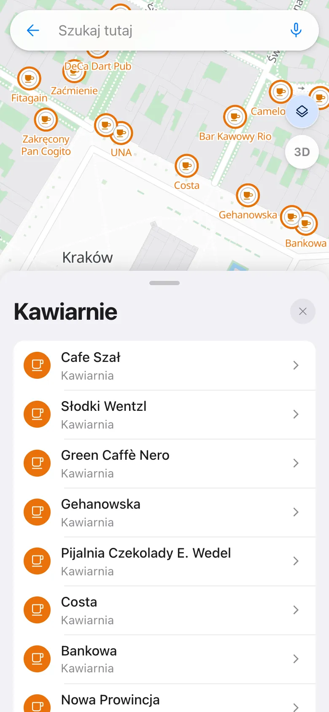

Wyszukiwanie
Znajdź to, czego szukasz
Jedno pole na wszystko: nazwa miejsca, adres, numer działki, współrzędne albo Plus Code. Możesz też po prostu powiedzieć, czego szukasz.
- Podpowiedzi już po kilku literach
- Wyszukiwanie głosowe: stuknij mikrofon w polu wyszukiwania (w przeglądarkach z rozpoznawaniem mowy)
- Restauracje, sklepy, apteki i stacje paliw w pobliżu
- Karta miejsca z godzinami otwarcia, telefonem, stroną i pogodą
- Przytrzymaj palec na mapie, aby zobaczyć adres i działkę w tym miejscu
